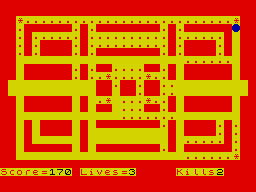
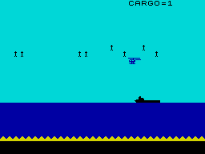

|
The Cascade Tape 50 (written on my C90) was an instant collection of games that your Nan thought you would like for your new-fangled 'puter-thing. For those on a staple diet of anything transcending naffness (i.e. anything written by Ocean, Imagine, Ultimate et al) the CT50 was an expensive tape to record the charts on. It was filled with the type of program you spent hours typing in from magazines. The frustration of the listing and failing after spending hours of meticulous scouring of endless lines of code was equal to that of attempting to 'play' the product of a listing that worked. This frustration became despair and invoked dangerous thoughts of random violence and mayhem...
Y'see, these games were crap. Really crap. You pressed the key to go left, and four seconds later as the asterisk/hash/UDG started to move left, the bad asterisk/hash/UDG that was nowhere near your asterisk/hash/UDG four seconds ago inexplicably appeared next to your asterisk/hash/UDG...and you lost a life...or the game...which was actually a bonus since you could pull the power lead out then plug it back in, then repeat the process by loading the next surprise on the CT50. And it was a surprise since the filename was always three letters long and - until the game loaded - you didn't know what you were going to get (Gumpisms eh?).
The CT50 deservedly holds a place in Spectrum-lore, as a reminder of why we kept games like World Cup Carnival on our shelves. It's remarkably similar to a situation Lister of Red Dwarf found himself in when to survive he had to choose between a tin of dog-meat and a pot-noodle. The noodly snack remained on the shelf.
Now, here in the texture-mapped-polygon-rendered-32-bit world of gaming, the Spectrum legends are being preserved by teams like Retrospec. The old classics such as Sabre Wulf are given a facelift, a paint-job and a couple of silicone-implants and we can't get enough. These feats of programming have rightly elevated the authors to hero-status, but it is still not enough for our appetite. Something is missing. We have a craving.
For crap.
|